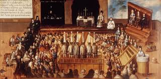

Colonial Government
A picture representing colonial government.
Native American tribes were constantly shaping the newly formed colonial governments through both strategic alliances and insurrections. Indigenous communities frequently advocated for government structures that promoted their well-being and voiced their interests. A key mechanism for this was the indigenous municipal council. These councils often mirrored pre-Hispanic forms of governance. They were a platform for Native leaders to manage communal affairs themselves and maintain some independence while living under the thumb of the Spanish crown. Leveraging these structures allowed Indigenous groups to "stamp" their influence on colonial governance, affecting local administration and preserving a degree of self-rule.